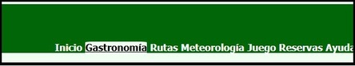
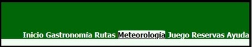
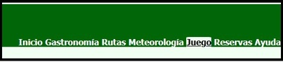
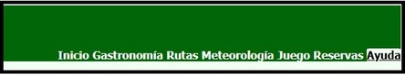
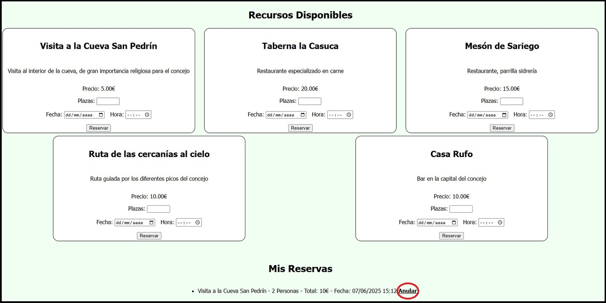
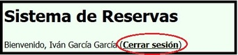

Ayuda
Navegación
La barra de navegación se encuentra en la parte superior de todas las páginas del sitio. Puedes utilizarla para acceder a las diferentes secciones del sitio web.
Al pulsar sobre el nombre de la página, "Guía Sariego", se te redirigirá a la página de inicio del sitio web.
Contenidos
En la derecha de la barra de navegación encontrarás enlaces a las diferentes secciones del sitio web:-
Al pulsar sobre el botón de inicio, se te redirigirá a la página de inicio del sitio web.
-

Al pulsar sobre el botón de gastronomía, se te redirigirá a la página de gastronomía del sitio web. En ella podrás consultar la gastonomía del concejo y ver sitios dónnde comer
-
Al pulsar sobre el botón de rutas, se te redirigirá a la página de rutas del sitio web.
-

Al pulsar sobre el botón de meteorología, se te redirigirá a la página de meteorología del sitio web. En ella prodras ver el tiempo del concejo hasta los próximos 7 días
-

Al pulsar sobre el botón de juego, se te redirigirá a la página del juego del sitio web.
-
Al pulsar sobre el botón de reservas, se te redirigirá a la página de reservas del sitio web.
-

Al pulsar sobre el botón de ayuda, se te redirigirá a la página de ayuda del sitio web.
Rutas
En la página de rutas podrás cargar un archivo XML para visualizar el varias rutas pertenecientes al concejo.
Juego
En la página del juego podrás jugar a un juego de preguntas y respuestas sobre el concejo de Sariego. El juego se basa en un cuestionario con varias preguntas y respuestas, y al finalizar te mostrará tu puntuación.
Para seleccionar una respuesta necesitas pulsar en la casilla circular al lado de la respuesta. Después tienes que pulsar sobre el botó "Siguiente"
Reservas
Login
Para poder acceder a la página de reservas necesitas tener un usuario. PAra crear un usuario puedes rellenar el formulario de registro con un nombre de usuario, tu email y una contraseña.
Si ya tienes un usuario puedes acceder a la página de reservas con tu email y contraseña.
Recursos turísticos
Una vez registrado, la página de reservas se divide en 2 partes. Una en la que puedes ver los distintos recursos turísticos disponibles y otra en la que puede gestionar tus reservas.
Para realizar una reserva, en el recurso que quieras introduces el número de personas de la reserva en "Plazas", luegpo seleccionas el día y la hora y pulsas en el botón de reservar.
Para anular una reserva puedes pulsar en el enlace que pone "Anular" al lado de los detalles de la reserva.
Cerrar sesión
Para cerrar sesión puedes pulsar en el enlace de "Cerrar sesión" que se encuentra en la parte superior derecha de la página de reservas.